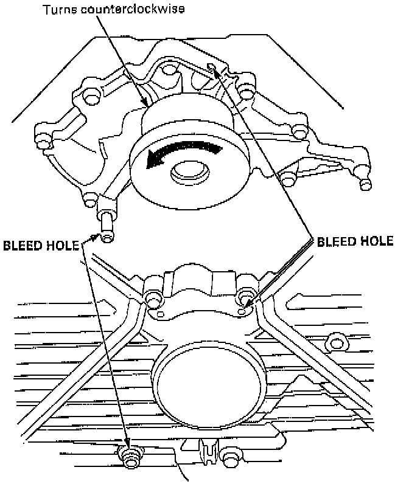

Water Pump Inspection

1. Remove the timing belt.
2. Turn the water pump pulley counterclockwise. Check that it turns freely.
3. Check for signs of seal leakage.
NOTE: A small amount of "weeping" from the bleed hole is normal.
